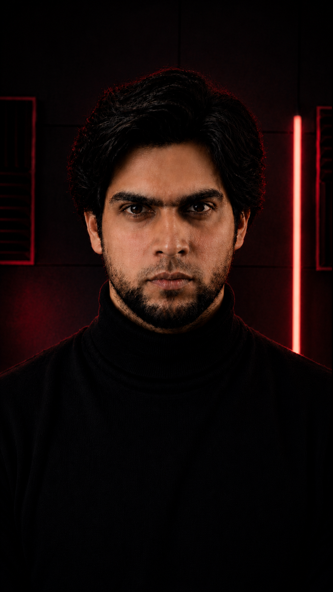

10+ years running IT operations, business process, and data governance — including governance and SOP work at Novartis — now building AI and data-quality tools in Python. I turn messy operational data into governed, trustworthy systems.
A rare combination: someone who understands governance and process — and ships the AI that makes it faster and safer.
Data-quality scoring across eight dimensions, SOP standardization, stewardship, controls, and audit trails — the discipline that makes reporting trustworthy.
AI-governance assessments — PII exposure, bias, AI-readiness — mapped to the NIST AI RMF and EU AI Act, so AI ships measurable, auditable, and trusted.
RAG assistants, agent workflows, and rules-based triage/routing — built on a decade of incident, change, and service-delivery operations.
Led 70+ person teams, standardized SOPs, and built the KPI dashboards leaders actually trust. At Novartis, my data-governance and SOP work lifted data quality 25% and cut reporting time 40%.
Three live, open-source tools — a data-quality & AI-governance engine, a RAG assistant, and a triage engine — not slideware.
AI risk built in from the start — PII, bias, auditability — mapped to recognized frameworks. An MS in Computer Science underneath it all.

Each one is deployed and open-source — built to prove the work, not just describe it. Click through and try them. (Live demos run on free hosting and may take ~20s to spin up.)
Scores any dataset across the eight data-quality dimensions, then runs an AI-governance data-risk assessment — PII, bias, AI-readiness — mapped to the NIST AI RMF and EU AI Act.
Answers natural-language questions over SOPs, runbooks, and policies using semantic embeddings — with transparent source retrieval, so every answer is grounded in cited documents.
Triages IT service-desk tickets for severity, priority, SLA risk, and routing — with the owning team and a recommended next action. Validated 24/24 against a labelled gold set.